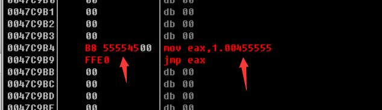

CULHook类
这个类写起来时很暴力的，和书上说的一样，我喜欢。
思路也比较简单粗暴，就是将我们的API指向地址的前八个字节写成：
1 | mov eax,0xXXXX |
也就是：

这里比较难搞的就是地址我们怎么赋值，可能有人就要考虑到一个大端小段，但是我们强转成DWOD类型就可以解决这个困惑了。
头文件：
1 |
|
这里就一个构造函数就可以进行HOOK了，但是非常注意的就是由于我们是直接暴力的写汇编，所以我们是不能要堆栈操作的。
源文件
构造函数：
1 | CULHook::CULHook(LPSTR pszModName,LPSTR pszFuncName,PROC pfnHook) |
首先将我们的汇编代码改一下，这里可以看到非常的巧妙，先转成DWORD然后再赋值，然后我们再将2,3,4,5这四个字节替换成我们的地址，这个是真的巧妙，之后我们就获取要HOOK函数的地址，再将这个地址的前八个字节的保护属性改掉，改完之后，写我们的这八个字节。
取消HOOK和重新HOOK：
1 | void CULHook::Unhook() |
取消HOOK和重新HOOK就是一样，也就是修改前八个字节。
析构函数就是先取消HOOK，然后再释放DLL句柄
1 | CULHook::~CULHook() |